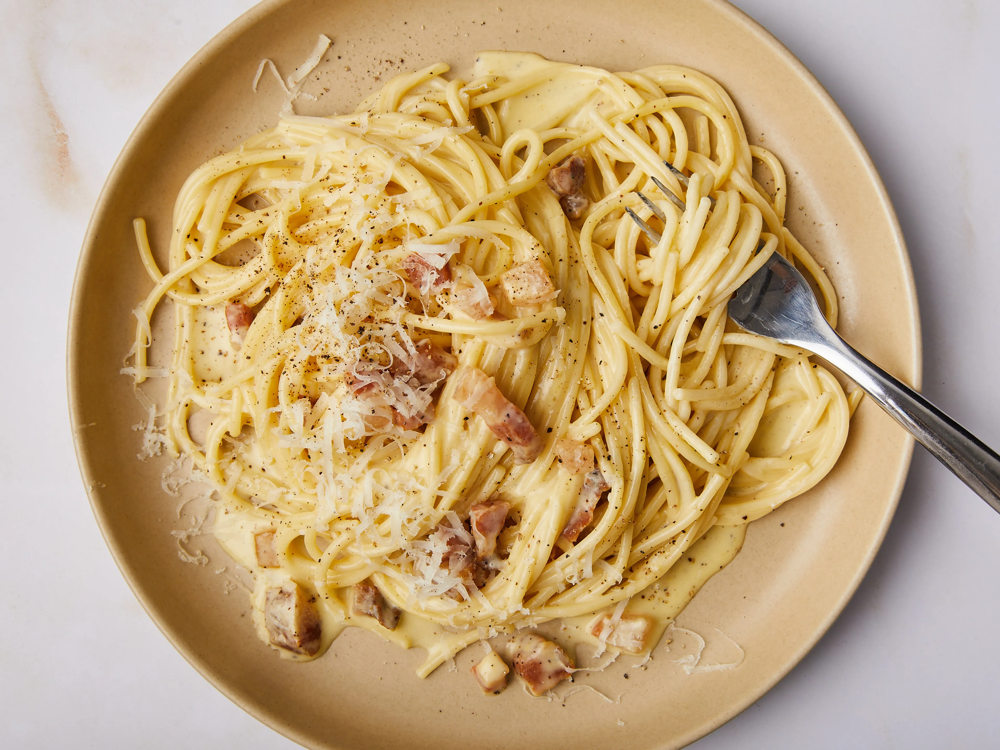
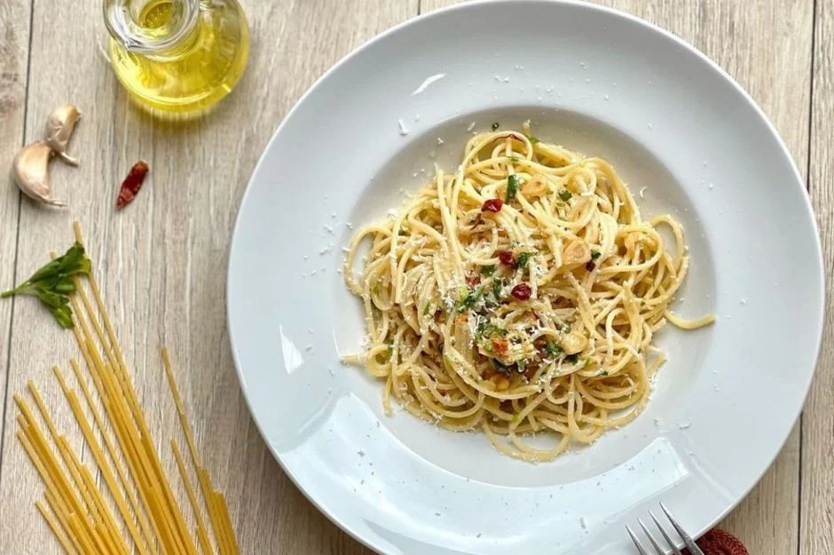

Classic Spaghetti Carbonara
Enjoy this classic spaghetti carbonara recipe, made with eggs, cheese, pancetta, and black pepper. It's a simple
yet delicious pasta dish that's perfect for any occasion.
-
Preparation time
- Total: Approximately 20 minutes
- Cooking: 15 minutes
-
Ingredients
- 400g spaghetti
- 200g pancetta or guanciale, diced
- 4 large eggs
- 100g grated pecorino Romano cheese
- Black pepper, freshly ground
- Salt, to taste
-
Instructions
-
Bring a large pot of salted water to a boil. Cook spaghetti according to package instructions until al dente.
-
In a large skillet, cook pancetta over medium heat until crispy. Remove from heat and set aside.
-
In a bowl, whisk together eggs, grated pecorino Romano cheese, and a generous amount of freshly ground black pepper.
-
Drain cooked spaghetti, reserving 1 cup of pasta water. Immediately add hot spaghetti to the skillet with pancetta. Toss to combine.
-
Pour egg mixture over hot spaghetti and toss quickly to coat, using the heat from the pasta to cook the eggs and create a creamy sauce. If needed, add reserved pasta water gradually to adjust consistency.
-
Serve immediately with extra grated cheese and black pepper on top.
Nutrition
The table below shows nutritional values per serving.
Calories
|
600kcal
|
Carbs
|
70g
|
Protein
|
25g
|
Fat
|
30g
|

Easy Pasta Recipe
This easy pasta recipe is a quick and satisfying meal that you can make in no time. With just a few ingredients, you'll have a delicious pasta dish that everyone will love.
-
Preparation Time
- Total: Approximately 20 minutes
- Preparation: 5 minutes
- Cooking: 15 minutes
-
Ingredients
- 8 oz (225g) pasta of your choice (spaghetti, penne, or fusilli work well)
- 2 tablespoons olive oil
- 3 cloves garlic, minced
- 1 can (14.5 oz) diced tomatoes
- 1 teaspoon dried basil
- 1/2 teaspoon dried oregano
- Salt and pepper to taste
- Grated Parmesan cheese for serving
- Optional: chopped fresh basil or parsley for garnish
-
Instructions
-
Cook the pasta according to the package instructions until al dente. Drain and set aside.
-
In a large skillet, heat the olive oil over medium heat. Add the minced garlic and sauté for about 1 minute until fragrant.
-
Add the diced tomatoes, dried basil, dried oregano, salt, and pepper to the skillet. Cook for 5-7 minutes, stirring occasionally, until the tomatoes break down and the sauce thickens slightly.
-
Add the cooked pasta to the skillet and toss until well coated with the sauce.
-
Serve the pasta hot, garnished with grated Parmesan cheese and chopped fresh basil or parsley, if desired.
-
Enjoy your delicious and easy pasta dish!
Pasta with Chicken and Béchamel Sauce
This pasta with chicken and béchamel sauce is a comforting and flavorful dish that's perfect for a cozy dinner at home. Creamy béchamel sauce coats tender chicken and pasta for a satisfying meal that everyone will love.
-
Preparation Time
- Total: Approximately 45 minutes
- Preparation: 15 minutes
- Cooking: 30 minutes
-
Ingredients
- 8 oz (225g) pasta of your choice (such as penne or fusilli)
- 2 chicken breasts, cooked and shredded
- 2 tablespoons butter
- 2 tablespoons all-purpose flour
- 1 and 1/2 cups (360ml) milk
- 1/2 teaspoon salt, or to taste
- 1/4 teaspoon black pepper
- 1/4 teaspoon nutmeg
- 1 cup (100g) grated Parmesan cheese
- Optional: chopped fresh parsley for garnish
-
Instructions
-
Cook the pasta according to the package instructions until al dente. Drain and set aside.
-
In a large skillet, melt the butter over medium heat. Add the flour and cook, stirring constantly, for about 1 minute to make a roux.
-
Gradually whisk in the milk, stirring constantly to prevent lumps from forming.
-
Cook the sauce, stirring frequently, until it thickens, about 5-7 minutes.
-
Season the sauce with salt, pepper, and nutmeg.
-
Stir in the shredded chicken and cooked pasta until well coated with the sauce.
-
Remove the skillet from heat and stir in the grated Parmesan cheese until melted and smooth.
-
Serve the pasta hot, garnished with chopped fresh parsley if desired.
-
Enjoy your delicious pasta with chicken and béchamel sauce!